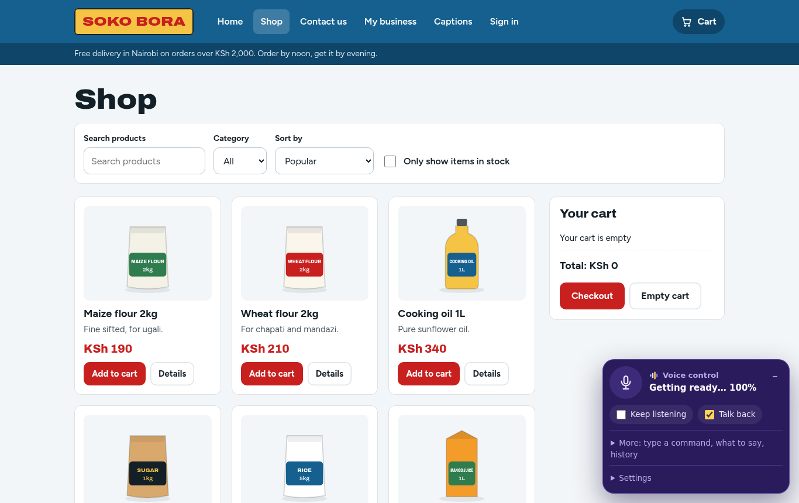

Why we are building Wezesha
Most websites assume you can see a screen, hold a mouse and type. Many people can't. We are building a way to use any site by voice, on your own phone.
Think about the last thing you did online. Paying a bill, booking a clinic visit, applying for a job, checking a school fee balance. Each of those assumed three things about you: that you can see the screen, that you can move a mouse or tap precisely, and that you can type.
For a lot of people in Kenya one of those is not true. Someone with cerebral palsy may find a touchscreen hard to tap. Someone who is blind needs the page read out. Someone who never learned to read well can still speak clearly. They are locked out of services the rest of us use without thinking.
What Wezesha does
Wezesha lets you control a website by speaking to it. You say “computer, open the shop”, “add rice to my cart” or “read this section”, and it happens.

It works on sites that were never built for it. Wezesha reads the page the way a screen reader does: it finds every button, link and form field and the name a person would call it. Then it matches what you said to what is on the page.
Why on the device
Speech is personal. What you say to your bank, your doctor or your county office should not travel to a company’s servers to be turned into text. Wezesha’s speech model and the model that decides what to do both run inside your browser. Nothing you say leaves your phone or computer, and after the first visit it works without a connection.
It also keeps the cost down. There is no server bill per user, so it can be free to the people who need it.
Why now
Kenya ratified the UN Convention on the Rights of Persons with Disabilities. Article 9 asks states to make information and communication technology, “including the Internet”, accessible. Article 4 asks for research into new technology “giving priority to technologies at an affordable cost”. Small speech models that run on a phone have only recently become good enough to make this practical.
What comes next
- Kiswahili. The speech model understands English today. We are training it on Kiswahili.
- Testing with the people it is for. We are working with organisations of persons with disabilities so that real users shape what we build, as the Convention asks.
- More places. A browser extension so it works on every site, and later an Android version.
You can try the demo in Chrome on a computer. The first visit downloads about 50 MB of models.